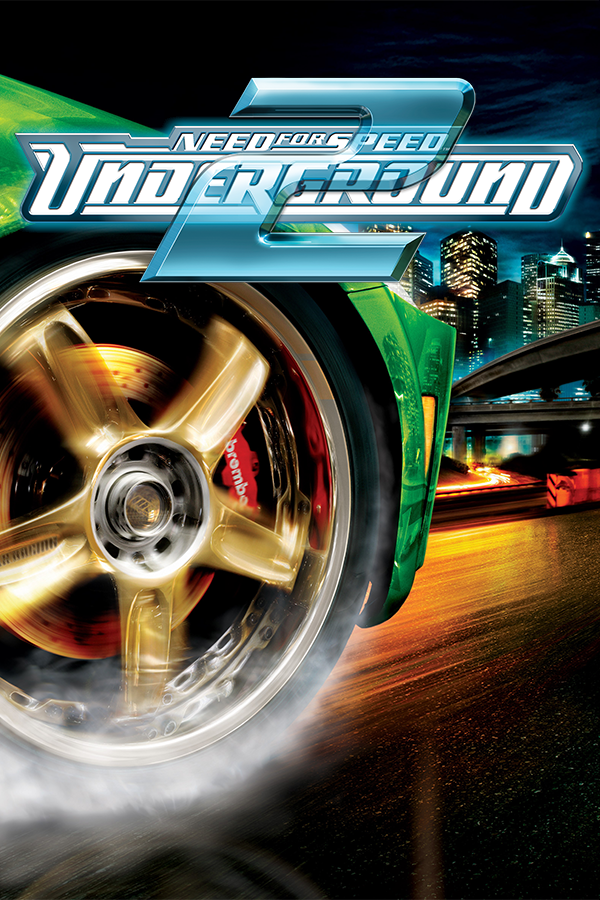

|  | |
| Playtime | Not Played |
| Last Activity | Never |
| Added | 5/7/2025 2:50:53 |
| Modified | 5/7/2025 3:30:55 |
| Completion Status | Not Played |
| Library | Playnite |
| Source | Steam |
| Platform | $PC (Windows) |
| Release Date | 11/15/2004 |
| Community Score | |
| Critic Score | 77 |
| User Score | |
| Genre | Racing |
| Developer | EA Black Box Ideaworks Game Studio Pocketeers Team Fusion |
| Publisher | Electronic Arts |
| Feature | Multiplayer Single Player |
| Links | Wikipedia MobyGames MobyGames MobyGames |
| Tag | [HLTB] 20 to 30 hours [People] composer: Tom Salta |
Need for Speed: Underground 2 is a 2004 racing video game developed by EA Black Box and published by Electronic Arts. It is the eighth installment in the Need for Speed series and the direct sequel to Need for Speed: Underground. It was developed for Windows, GameCube, PlayStation 2, and Xbox. Game Boy Advance and Nintendo DS versions were developed by Pocketeers, and a PlayStation Portable version, titled Need for Speed: Underground Rivals, was developed by Team Fusion. Another version for mobile phones was also developed by Ideaworks Game Studio. Like its predecessor, it was also commercially successful, selling around 11 million copies worldwide and breaking sales records in the United Kingdom.
The game entails tuning cars for street races, resuming the Need for Speed: Underground storyline. Need for Speed: Underground 2 provides several new features, such as broader customization, new methods of selecting races, set in a city known as Bayview. The game stars Brooke Burke as the voice of Rachel Teller - who guides the player throughout the game - and David Palffy as Caleb Reece, the game's main antagonist. The game's storyline is presented in a comic book strip. The Nintendo DS port introduces a new feature in which the player can design custom decals to adorn any vehicle in the game.
The story takes place after the initial events of Underground, shortly after the player beats Eddie and his street racing gang The Eastsiders in Olympic City, along with Melissa. Revered as the best street racer in Olympic City, the player wins a race while driving a blue Nissan Skyline GT-R and promptly receives a call from an unidentified individual with an "invitation" to join his team, followed by a threat explicitly disclaiming that he is not "taking no for an answer". Angered, the player immediately hangs up the call and drives to a celebratory party; while talking to Samantha on the phone, they are blinded and ambushed by a Hummer H2 from a dark alley, which rams and wrecks their Skyline. A man with a scythe tattoo on his hand calls to confirm that he "took care of a problem".
Six months later, the player boards a plane to the fictional city of Bayview with a good luck note from Samantha, referring to her friend Rachel Teller, as well as being given a car key bearing the name 'Rachel'. The player arrives in Bayview and is contacted by Rachel, who has left them her Nissan 350Z at the airport car lot, asking to meet at a car dealership; the player can ignore these instructions and race in three events and outruns before Rachel calls demanding her car back, after which no more races will spawn. At the dealership, he buys his first car using the money provided by their insurance company over the totaled Nissan Skyline, and begins to race again.
Rachel becomes the key contact within Bayview. She explains the layout of Bayview street racing scene, introducing the sponsorship mechanics, the Underground Racing League (URL) and actively aids the player afterwards by giving them tips on driving, secret shops, important events and sometimes hidden events. The player soon gains fame and obtains sponsorship deals from winning races - this draws the attention of Caleb Reece and his racing crew The Wraiths.
Rachel reveals to the player that Caleb is attempting to take control of the racing scene in Bayview by manipulating sponsorship deals in his favor, threatening the player's livelihood and Rachel's liaison with the sponsors. Caleb attempts to have the player lose an Underground Racing League tournament by placing Nikki Morris, a Wraith member, in the same tournament as the player. This backfires, and Nikki leaves the Wraiths after Caleb berates her for losing; she then joins Rachel and the player's side. Nikki warns them of the consequences of Caleb's plan if he takes over the city's street racing scene. Caleb is revealed to be the driver of the Hummer that wrecked the player's car in Olympic City.
Desperate to stop the player, who has accrued too much reputation and hype, Caleb eventually pits all remaining Wraiths members in a URL tournament against them, which fails. Having lost another sponsor, Caleb challenges the player to a showdown. The player defeats Caleb, now left penniless, and celebrates with Rachel and Nikki, solidifying their status as the best Underground racer in Bayview.
Underground 2 is the first game in the series to feature an open world called Bayview, which itself is based on the U.S. cities of San Francisco, and Los Angeles. The players can drive freely around and explore the city, unlocking areas by winning races. Racing modes are roughly similar to Underground; one racing mode was dropped, this being the Knockout competitions. A Lap Knockout option is available when racing Circuit in non-career races.
Unlike Underground, time plays a crucial role here, especially in parkade tracks; if the opponents end up crossing the finish line way before the player, a 30-second timer will start within which the players will have to accumulate drift points until the timer runs out or they cross the finish line.
Apart from these, four new race variations have also been provided in Underground 2:
The races are divided into 5 "stages". Once any stage is completed, the race locations of that stage will be replaced by the counterparts of the next stage. A "World Map" feature includes a menu of races for all prior stages, denoting races that have been completed and yet to be completed. After completing stage 2 through stage 5 (these stages require completing some number of "DVD" events), there will always be 8 sponsor races that will not be completed, since a player has to choose a single sponsor per stage and can only run 3 out of 11 unique sponsor races, leaving 8 sponsor races incomplete at the end of each stage. These can only be run using World Map. Due to a game bug (at least on the PC version), if running a non-completed race from the World Map, no credit (cash or rep) will be awarded unless the player restarts at least once after the race starts.
Underground 2 is unique in the Need for Speed series in the sense that it requires a player to drive to a certain place in the city to begin a race (other games allow the player to select a race from a menu). Most races are marked on the in-game radar, but some are hidden and the player must search for them, should they decide to play them. The following features aid the players in this regard:
The game also introduces nitrous refill; unlike Underground where nitrous can be used only once, nitrous can now be used multiple times, albeit the refill has to be done manually by performing stunts such as drifts, near misses, etc., earning style points which then get accumulated as nitrous. The more style points the player gets, the more the nitrous gets accumulated until the meter fills up twice.
As in Need for Speed: Underground, Underground 2 continues to offer similar vehicles for purchase and modification with a focus on tuner cars. Most of the available vehicles consist of Japanese models such as Nissan 240SX, Nissan Skyline R34, or Mitsubishi Eclipse, with some European and American models. Also, as the tuner scene expanded to full-size SUVs, three SUVs (which are the Hummer H2, Cadillac Escalade, and Lincoln Navigator) appeared in the Need for Speed series for the first time. Muscle cars such as the Ford Mustang and Pontiac GTO also returned to the series after being absent in Underground. It is the second game in the Need for Speed series after Underground to offer a Korean-made car (Hyundai Tiburon) as a racing vehicle. There are two versions of the game, US and EU, where each version has 29 of 31 possible cars: the US version has an Acura RSX and a Honda Civic Si, while the EU version instead has a Peugeot 106 and a Vauxhall Corsa, the rest of the 27 cars in both versions are the same.
SUVs, also known as sport utility vehicles, were a new element added to Underground 2. The SUVs can be upgraded and tuned in the same manner as cars. Some of the events in career mode are SUV-only events and only appear when a player is driving an SUV. In career or any offline mode, if the player is driving an SUV, the computer opponents also drive SUVs, but after completing a stage, the World Map allows a player to run any event from prior stages in either a car or an SUV.
Customization in Underground 2 was significantly expanded compared to previous iterations from the series. Visual customization has expanded with the ability to customize the car's front and rear bumpers, side skirts, spoiler, hood, exhaust tips, doors, roof scoop, wheels (including the ability to put on spinners), headlights and taillights, side mirrors and paint. Vinyls and decals can also be added, as well as car stereos (speakers, amplifiers & subwoofers), hydraulics, nitrous bottles, and underglow neon. Most visual modifications to the car have no actual effect on vehicle performance. The sound systems, for example, could be put in the trunk of cars but served no purpose other than visual cues. Hydraulics can be used in combination with nitrous at a start of a race which can cause a car to do a wheelie and for some cars get a better launch. The performance and handling of the car are affected by cosmetic modifications, like spoilers and hoods, which affect the downforce of the car - better spoilers allow better tuning of the downforce management both in front and in the back of the vehicle. Visual upgrades increase a car's visual rating, up to a rating of 10.0. At least one car in a career garage needs to be visually upgraded to a 10.0 rating to unlock all 10 DVD events (completing these rewards the player with a DVD cover), and each stage has a required number of DVD events.
A car's performance can be enhanced by upgrading the car's engine, engine control unit (ECU), transmission, suspension, tires, brakes, reducing the car's weight, and adding a turbo and/or nitrous. The player has the ability to either upgrade the performance through upgrade packages or by purchasing individual parts of each performance category. Underground 2 also introduces a dyno-tuning system which allows players to specifically tune certain aspect of the car such as ECU, turbo, suspension springs, front and rear shock absorbers, gear ratios, aerodynamics, brake bias, individual tire grip, etc. The player can test the settings via a dyno run which will display a torque and power versus rpm graph, and an estimated 0–60 mph (0–100 km/h) time.
Underground 2 had online multiplayer capability on PS2, PC, and Xbox, but by 2010, EA Games had shut down their servers, rendering the feature inoperable. The PC version has a multiplayer LAN mode, and multiplayer races over the internet can still be run using the games LAN mode and a virtual LAN (a virtual private network).
Like its predecessor, the game features a licensed soundtrack by EA Trax. There is a mix of different genres ranging from rap, trance, electronica, and rock, performed by artists such as Chingy, Paul Van Dyk, Unwritten Law, Spiderbait (doing a cover of Ram Jam's Black Betty), Fluke, and Queens of the Stone Age. The game's theme song is a remix of The Doors' Riders on the Storm by Snoop Dogg. The hip hop songs are heard in the main menu, while the trance, electronica, and rock music are heard during race sequences.
Need for Speed: Underground 2 received positive reviews. GameRankings and Metacritic gave it a score of 86% for the Mobile version; 83.50% and 82 out of 100 for the PC version, 82.61% and 83 out of 100 for the Xbox version, 80.77% and 82 out of 100 for the PlayStation 2 version, 79.98% and 77 out of 100 for the GameCube version, 76.44% and 74 out of 100 for the PSP version, 69.45% and 72 out of 100 for the Game Boy Advance version and 65.44% and 65 out of 100 for the DS version.
The game was widely regarded as one of the best games of the series and is remembered for the quality of the gameplay, the length, the endless customization, the interesting side-missions, the graphics, and the addition of open-world free roam. However, some parts were criticized, such as the inability to fast travel to races and events. Reviewers noted the game's strong product placement for companies with little or no connection to automobiles, such as Burger King, Best Buy (in the US version), and former American mobile network company Cingular, which had their logo attached to the game's messaging system and shown on-screen for much of the gameplay. There was also some criticism for the game hip-hop slang used by the characters (such as using "bank" to refer to money), the comic book styled cutscenes, and the lack of police, which were last seen in Need for Speed: Hot Pursuit 2. The GameCube version was criticized for unstable frame rate and inferior graphics.
GameSpot gave the mobile phone version a score of 9.2 out of 10 and said that it "isn't just the best racing game ever made for a mobile phone (...) This game boasts game length and replay value so many orders beyond the mobile norm that it calls for a total paradigm shift." IGN gave the same version a score of eight out of ten and called it "a big step for mobile gaming."
Detroit Free Press gave the Rivals version all four stars, exclaiming, "The racing here is just flat-out fun, with growling engines, jumps, and shortcuts that allow you to smash through fences. But there are thoughtful additions, including Party Play." The Sydney Morning Herald, however, gave the Rivals version three-and-a-half stars out of five and said, "While not PSP's best driving game, Rivals is an entertaining street racer that offers quick thrills." On the other hand, the same newspaper gave the GameCube, PS2, PC, and Xbox versions a score of four stars out of five and said, "While the driving action isn't quite as satisfying as the superb Burnout 3, it's still strong enough to keep you playing through the 150 or so races." The Times also gave the game four stars out of five and stated, "The courses in this game are just as much the stars as the cars. The dazzling downtown locations are massive, dominated by skyscrapers whose light bathes the streets in a radiant glow."
During the 8th Annual Interactive Achievement Awards, the Academy of Interactive Arts & Sciences nominated Underground 2 for "Outstanding Achievement in Soundtrack".
According to Electronic Arts, Need for Speed: Underground 2 sold above 8.4 million units worldwide by the end of 2004. The PlayStation 2 version of Underground 2 received a "Double Platinum" sales award from the Entertainment and Leisure Software Publishers Association (ELSPA), indicating sales of at least 600,000 copies in the United Kingdom. The game ultimately sold around 11 million copies and entered the "best-sellers" of each console, PS2's Greatest Hits,[citation needed] Xbox's Platinum Hits,[citation needed] and GameCube's Player's Choice.[citation needed]